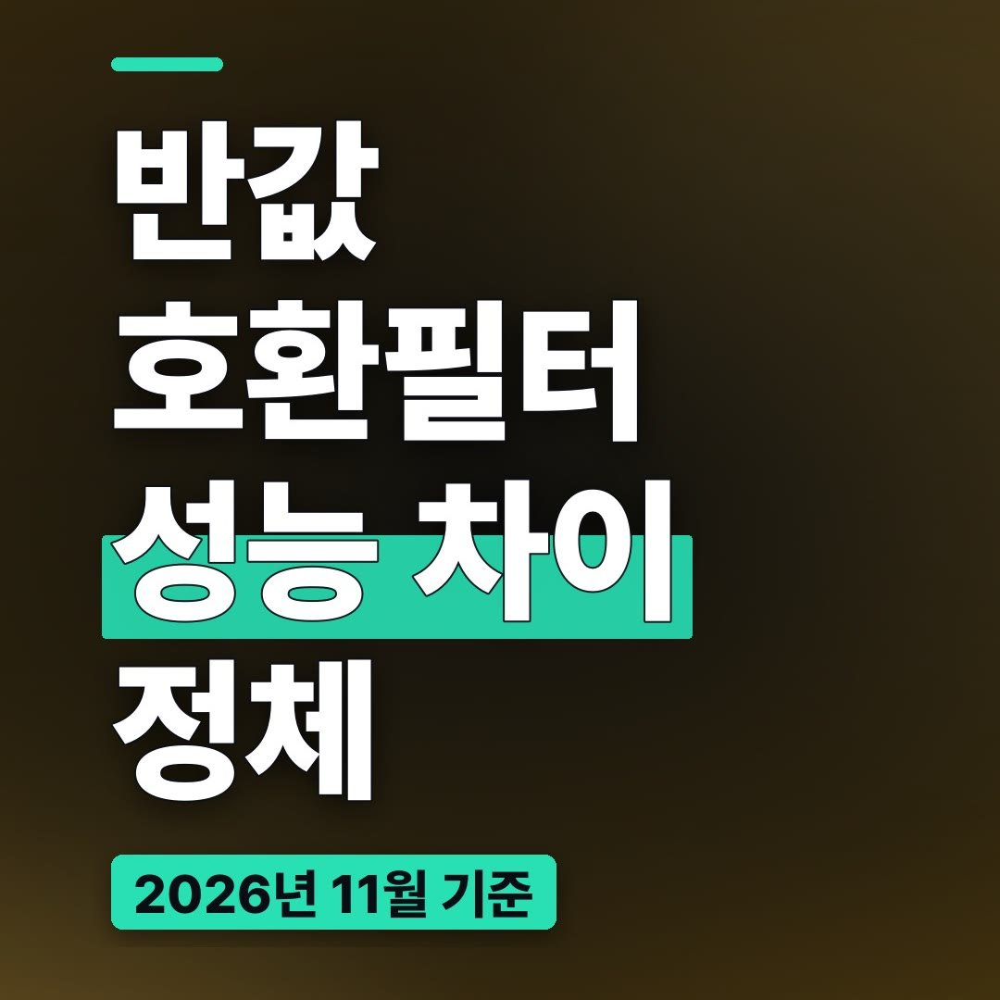
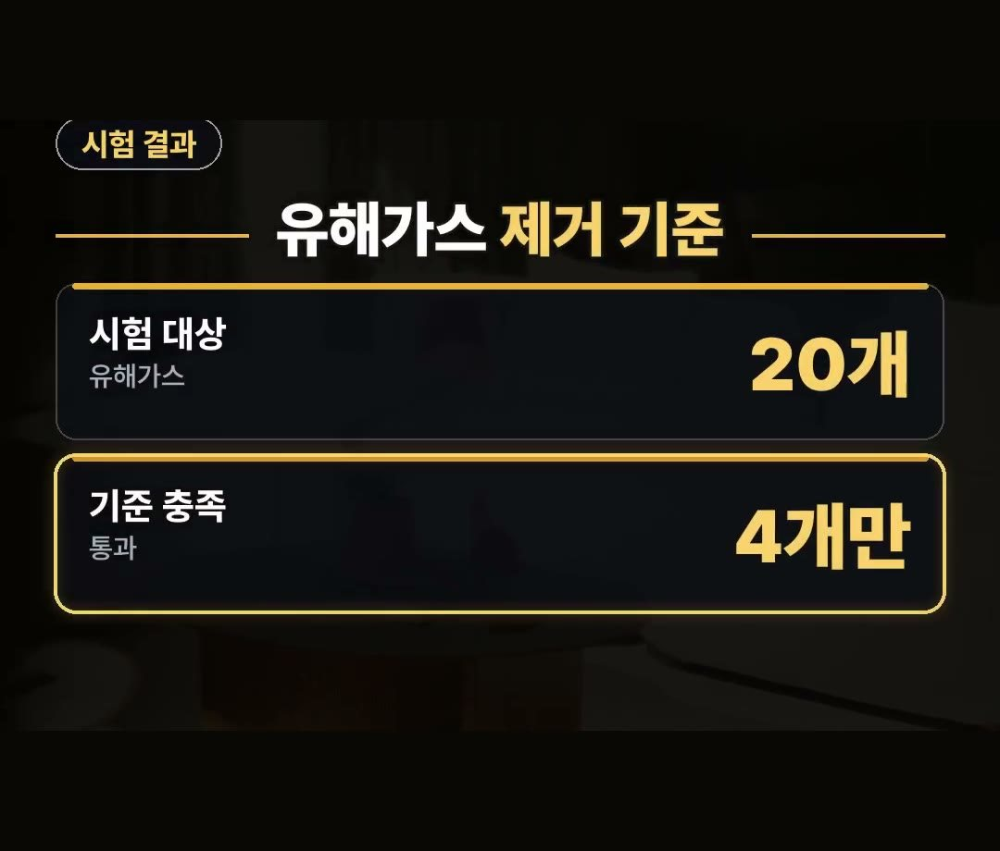
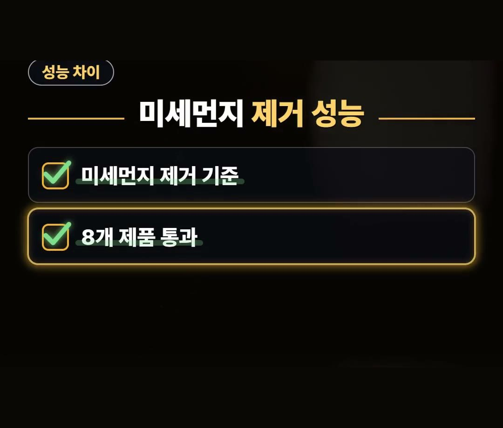
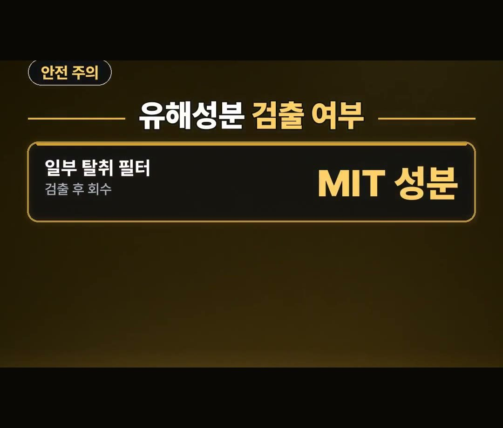
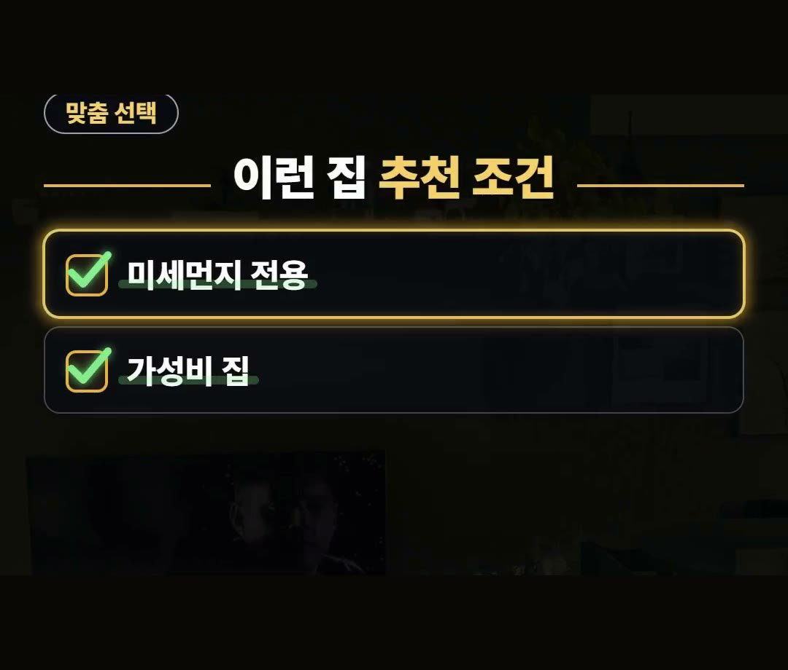

공기청정기 필터 호환 차이, 사기 전에 확인할 시험 결과 3가지
※ 이 글에는 제휴 링크가 포함되어 있으며, 링크를 통해 구매하시면 일정 수수료를 받을 수 있습니다. (가격은 같습니다)
※ 이 포스팅은 쿠팡 파트너스 활동의 일환으로, 이에 따른 일정액의 수수료를 제공받습니다.
※ 이 콘텐츠는 토스쇼핑 쉐어링크 활동의 일환으로, 링크를 통한 구매가 발생하면 일정 수수료를 지급받습니다.
공기청정기 필터 호환품을 고르기 전에 딱 3가지만 기억하면 됩니다.
값, 유해가스 제거 기준, 그리고 안전 표기예요.
2026년 7월 소비자원 발표 내용을 바탕으로 하나씩 풀어 볼게요.
돈 아끼는 연구소 아낌 소장이에요.
2026년 7월 소비자원 발표에서 호환필터 값은 정품의 30에서 56% 수준이었고, 유해가스 제거 기준은 시험 대상 20개 중 4개만 통과했다는 내용을 정리해 봤어요.
값과 성능을 같이 보는 것, 꼭 기억하세요! 😊

필터 교체 시기가 다가오면 정품보다 값이 낮은 호환품이 눈에 들어오죠.
그런데 값만 보고 고르기에는 확인할 것이 있어요.
소비자원 발표에 담긴 가격 비교와 성능 시험 내용을 차례대로 정리했습니다.
호환필터 값은 정품의 30에서 56% 수준
먼저 값부터 볼게요.
2026년 7월 소비자원 발표에 따르면 호환필터 값은 정품의 30에서 56% 수준이라고 합니다.
- 호환필터 값: 정품의 30에서 56% 수준
- 기준: 2026년 7월 소비자원 발표
정품보다 낮은 값이 눈에 띄는 건 사실이에요.
다만 값이 낮다는 것과 성능이 같다는 것은 다른 이야기라서, 아래 시험 결과를 함께 봐 주세요.
공기청정기 필터 호환 차이, 유해가스 제거 기준부터

공기청정기 필터 호환 차이가 가장 눈에 띄는 부분이 유해가스 제거 기준이에요.
같은 발표에서 유해가스 제거 시험을 한 대상은 20개였는데, 기준을 충족한 것은 4개뿐이었습니다.
- 시험 대상: 20개 (유해가스)
- 기준 충족: 4개만 통과
생각보다 적죠.
호환필터에 유해가스 제거까지 기대하고 계셨다면, 20개 중 4개만 통과했다는 점을 먼저 떠올려 보세요.
미세먼지 제거 성능은 8개 제품이 통과

미세먼지 쪽은 조금 다른 결과가 나왔어요.
미세먼지 제거 기준은 8개 제품이 통과했습니다.
제품마다 성능 차이가 있었다는 점도 같이 전해졌어요.
- 미세먼지 제거 기준: 8개 제품 통과
유해가스 시험과 미세먼지 시험은 서로 다른 항목이라, 통과한 개수를 단순하게 맞비교하지는 않았으면 해요.
어떤 성능을 기대하느냐에 따라 살펴볼 항목이 달라진다는 정도로 기억해 주세요.
일부 탈취 필터에서 MIT 성분 검출 후 회수

안전과 관련된 내용도 있어요.
일부 탈취 필터에서 MIT 성분이 검출되어 회수됐다고 합니다.
- 일부 탈취 필터: MIT 성분 검출 후 회수
모든 제품이 그렇다는 뜻은 아니고 일부 탈취 필터의 이야기예요.
그래도 필터를 살 때는 안전 표기를 잘 확인해 보는 편이 좋겠습니다.
이런 집이라면 호환 필터를 살펴보세요

그렇다면 어떤 집에 맞을까요?
시험 결과를 바탕으로 고를 때 볼 점 3가지를 우리 말로 정리했습니다.
- 값: 정품의 30에서 56% 수준인지 확인하기
- 성능: 유해가스 제거가 필요한지, 미세먼지만 걸러 내면 되는지 정하기
- 안전: 안전 표기가 있는지 보기
미세먼지만 걸러 내면 되고 가성비를 중요하게 보는 집이라면 공기청정기 필터 호환 제품을 후보에 올려 볼 만해요.
이런 조건에 맞춰 상품 설명에 따른 공기청정기 호환용 필터 1개를 아래 링크에 담아 두었어요.
정리
- 호환필터 값은 정품의 30에서 56% 수준이에요 (2026년 7월 소비자원 발표).
- 유해가스 제거 기준은 시험 대상 20개 중 4개만 통과했고, 미세먼지 제거 기준은 8개 제품이 통과했어요.
- 일부 탈취 필터는 MIT 성분이 검출되어 회수됐으니 안전 표기를 확인하세요.
링크는 아래에 모아 두었어요.
📌 2026년 11월 기준 정보예요. 가격은 시기에 따라 달라질 수 있어요.
사진·영상: Pexels (Alef Morais, Fernanda Neitzel, Javid Hashimov, Mizuno K, https://kaboompics.com/)